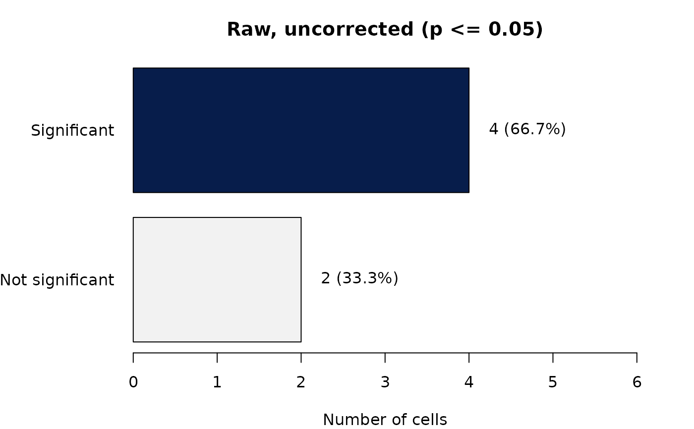
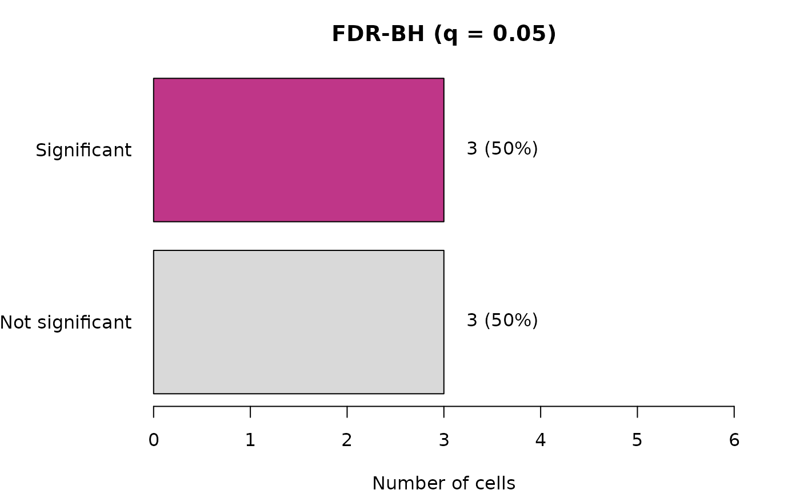
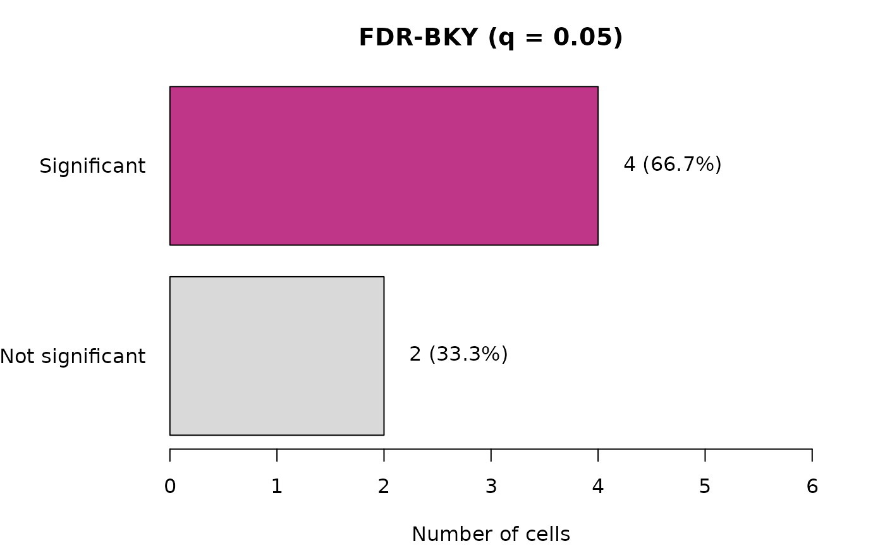

Function type: Reporting/derived function – summarises or
plots the output of
another function; it does not compute any new statistic. Not
exported – called internally by report = TRUE, and reachable from
outside the package via plot(x, which = "comparison").
Arguments
- result
Output of
fdr_correction()(must have been run on a raster, soresult$rastersis populated).- path
Character or
NULL. If supplied, a PNG is written there.
References
See fdr_bh() and fdr_bky() for the full reference list and the
reasoning behind each citation.
Benjamini, Y., & Yekutieli, D. (2001) The control of the false discovery rate in multiple testing under dependency. Annals of Statistics, 29(4), 1165-1188. doi:10.1214/aos/1013699998
See also
Other FDR correction functions:
fdr_bh(),
fdr_bky(),
fdr_by(),
fdr_correction(),
fdr_direction_plot(),
fdr_direction_summary(),
fdr_pvalue_histogram(),
fdr_significance_maps(),
fdr_summary(),
fdr_threshold_plot()
Examples
# The plotting function needs an FDR result, not a complete raster trend
# analysis. Using a short p-value vector keeps the example focused and
# fast while exercising the same plotting code.
p <- c(0.001, 0.008, 0.02, 0.04, 0.3, 0.8)
fdr_result <- fdr_correction(p, report = FALSE, verbose = FALSE)
# A bar chart version of fdr_summary()'s table -- raw vs. BH vs. BKY,
# visually.
sptrends:::fdr_comparison_barplot(fdr_result)


